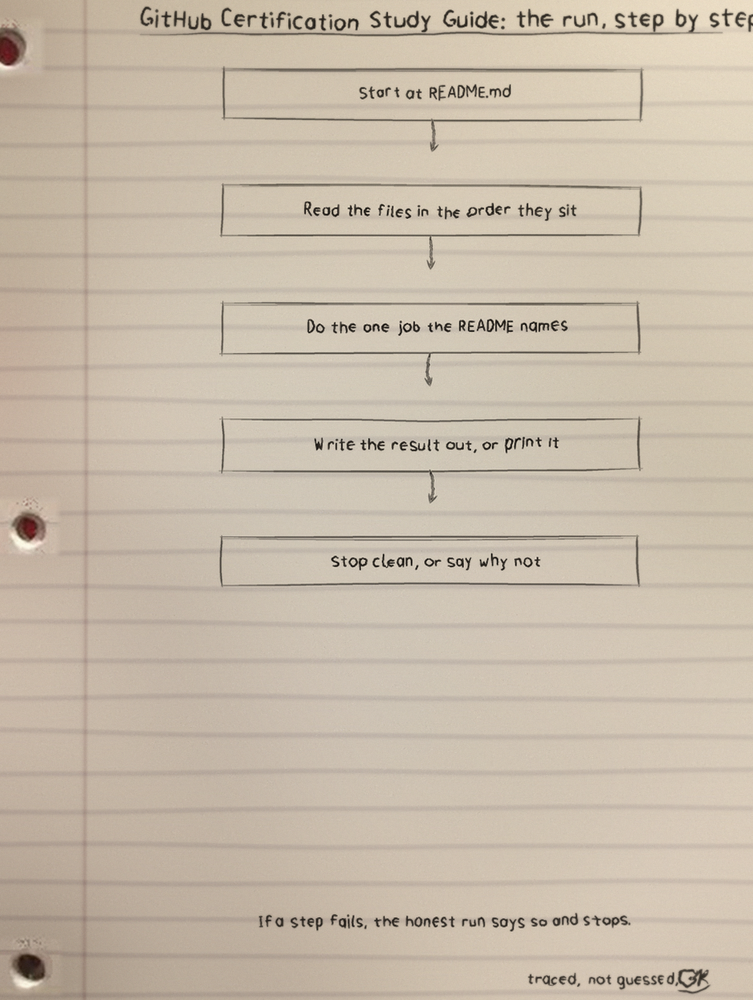
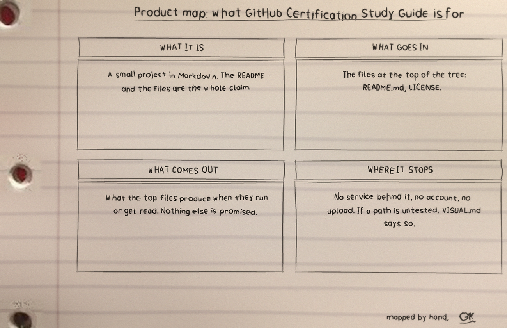

Run the quiz
python3 study.py # 10 mixed questions
python3 study.py --topic actions # drill one area
python3 study.py --count 20 # a longer sitting
python3 study.py --help # all flagsPython 3, standard library only. ● The bank holds 15 questions: 7 foundations, 6 actions, 2 copilot, shuffled in question order and in answer order each run.
How a sitting behaves
An answer is graded at once, with the correct answer and an explanation shown. Missed questions return in a closing recap pointing back into GUIDE.md. A topic with fewer questions than requested, copilot with only 2, prints how many exist and asks all of them. A bad topic or bad count exits with status 2. Blank, out of range, or look alike digit answers count as wrong without crashing. Ctrl-D and Ctrl-C close early and the score counts only questions actually answered, printing No questions answered. when none were.
👁The guide itself
Foundations covers repositories, branches, pull requests, forks, issues, Projects, Discussions, branch protection, and Codespaces. Actions covers workflows, jobs, steps, runners, needs, artifacts, matrix, secrets, reusable workflows, and composite actions. Copilot covers editor, web, CLI, and mobile suggestions and chat, plus exam tips.
Proof and the files
17 tests in test_study.py run with python3 -m unittest, covering the bank, count parsing, grading edge cases including the superscript two regression, early exits, the small pool note, and command line exit codes.
| File | What it holds |
|---|---|
study.py | The interactive quiz |
test_study.py | The 17 tests |
GUIDE.md | The written guide, three chapters plus exam tips |
assets/banner.png, assets/logo.png | Project branding |
LICENSE | GPL-3.0 |
The sheets
Drawn by hand
The full set is the GitHub-Certification-Study-Guide-Visuals folder in the repo.

